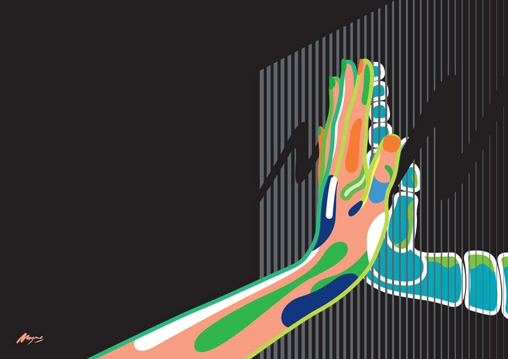
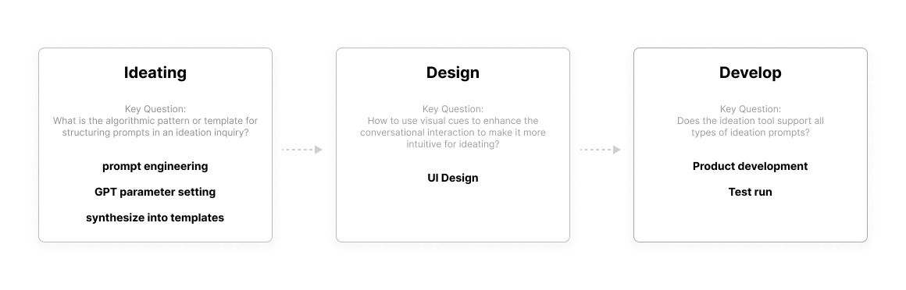
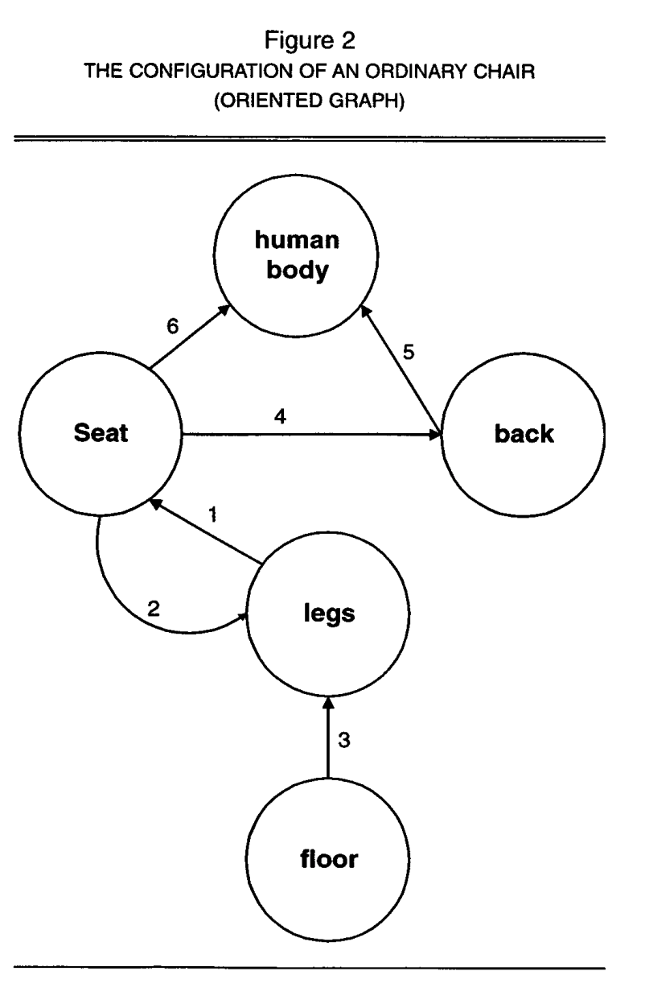
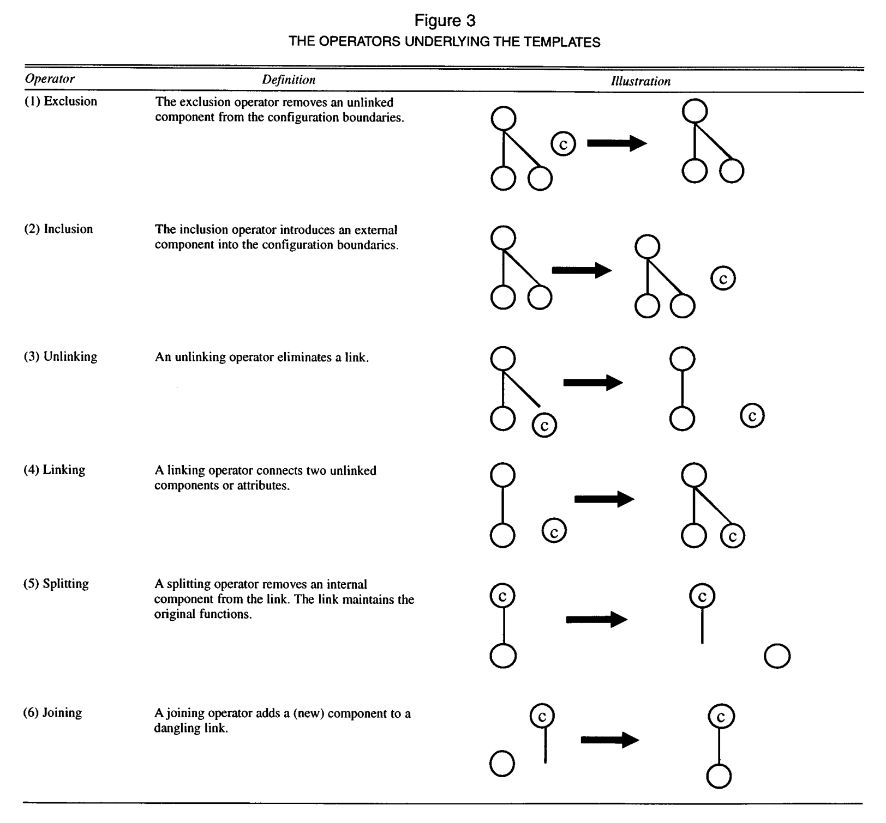
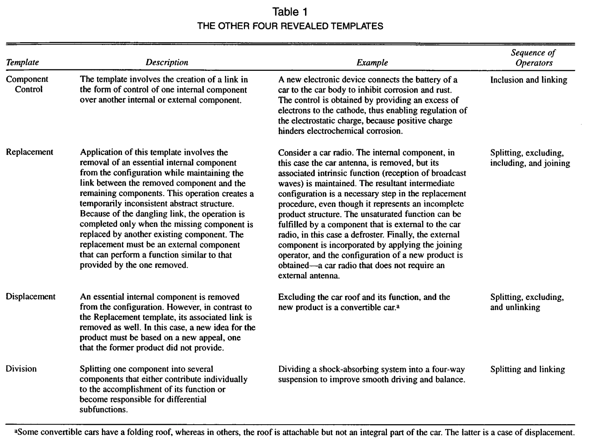

Project concept
While working with LLMs in ideation sessions, I realized that they can generate original and feasible ideas—but only with the right prompts. Inspired by this thought, I decided to develop a tool that automates and streamlines the ideation process, enhancing results beyond the basic capabilities of current LLMs.
In short, I want to create an ideation partner that empowers human to generate more innovative product ideas.

Project planning
To achieve this, I developed a project planning timeline. By applying prompt engineering and parameter tuning, the user’s original prompt is reworked in the background using some predefined templates that I will be creating using my research findings. This approach will leverage LLMs as both prompters and refiners, striving to open up more creative possibilities for product development.

Research & Insights
There are numerous papers online exploring innovation-related topics, including both product innovation templates and the role of LLMs in supporting ideation. I’ve reviewed several relevant studies and distilled their insights into valuable references for the future development of my project.
Identifying the Inventive Templates of New Products
Co-authored by Jacob Goldenberg, David Mazursky, and Sorin Solomon, this paper presents scalable inventive templates and structured frameworks for technological innovation. These templates serve as guidelines for generating innovative product ideas, regardless of the product’s content or nature.
Step 1: Analysis of product configuration
Every product consists of distinct attributes and components that interact to shape its overall appearance and function. Since innovation often involves modifications to a product’s configuration, dissecting its structure can provide valuable insights into its nature and serve as a strong starting point for transformation.
Below is the configuration chart of an ordinary chair.

Step 2: Introducing operators to change the product configuration
A typical innovation involves completely removing a well-established assumption about a product. However, this is only part of the picture. Various operations can be applied to modify a product’s configuration. For example, linking connects previously unrelated components or attributes, while splitting removes an internal component from the system while preserving its original function.
Innovative ideas usually come from introducing one or more operators to the product configuration.

Step 3: Forming templates
An inventive template consists of a sequence of operators. By strategically combining the six primary operators, we can create a scalable product innovation framework—transforming the core essence of one successful idea into thousands of variations without simply imitating it.
For example, the template control, involving the creation of a link in the form of control of one internal component over another internal or external component, uses the operator inclusion and linking sequentially.

Optimizing Prompts to Increase AI Idea Variance
The working paper by Lennart Meincke, Ethan Mollick, and Christian Terwiesch, examines LLMs’ ability to generate diverse ideas and explores strategies for optimizing prompts to enhance idea diversity.
By comparing 1,000 AI-generated ideas—produced using different prompts—with those generated by student groups, the authors identified several effective prompting techniques for brainstorming. These techniques help improve idea diversity while minimizing repetition.
Chain-of-Thought (CoT) works the best
Among the 35 prompting techniques, Chain-of-Thought remains the most effective. This approach breaks ideation into microtasks, prompting GPT to complete each step sequentially. Using this method, the Cosine similarity—an index measuring idea diversity—most closely aligns with that of student-generated ideas.
Here’s an example prompt: >Generate new product ideas with the following requirements: The product will target college students in the United States. It should be a physical good, not a service or software. I’d like a product that could be sold at a retail price of less than about USD 50. The ideas are just ideas. The product need not yet exist, nor may it necessarily be clearly feasible. > >Follow these steps. Do each step, even if you think you do not need to.
>First generate a list of 100 ideas (short title only) Second, go through the list and determine whether the ideas are different and bold, modify the ideas as needed to make them bolder and more different. No two ideas should be the same. This is important! Next, give the ideas a name and combine it with a product description. The name and idea are separated by a colon and followed by a description. The idea should be expressed as a paragraph of 40-80 words. Do this step by step!
Creative Entrepreneur prmopting technique can be helpful
Setting GPT’s role as an extremely creative entrepreneur also yields strong results. The tool can further specify well-known personas, such as Steve Jobs or Sam Altman, to guide idea generation. Additionally, incorporating modifiers like requesting ideas to be good and bold enhances the output.
Here’s an example prompt: >You are an extremely creative entrepreneur looking to generate new product ideas. The product will target college students in the United States. It should be a physical good, not a service or software. I’d like a product that could be sold at a retail price of less than about USD 50. The ideas are just ideas. The product need not yet exist, nor may it necessarily be clearly feasible. Number all ideas and give them a name. The name and idea are separated by a colon. Please generate 100 ideas as 100 separate paragraphs. The idea should be expressed as a paragraph of 40-80 words.
Insights Summary
Based on the insights from papers and experiments, I summarized the following techniques for ideating environment setup:
- Chain-of-Thought prompting: Instead of generating ideas in a single run, the brainstorming process follows an incremental approach. Ideas are developed through multiple inquiries, recombinations, and evaluations. The original user prompt is broken down into microprompts, with LLMs responding to each step individually, gradually refining the output.
- Human-machine collaboration: In idea generation, LLMs still lag behind humans, particularly in diversity. However, given their strength in productivity, they excel at rapid searching, comparing, matching, and exploring possibilities. When combined with human creativity and unique input, this partnership creates a synergistic approach to ideation.
- Ideation as schemes: As demonstrated by IDEO and many other design agencies, the creative process can be distilled into patterns. Just as design follows a structured process, so does brainstorming. By applying the inventive templates outlined by Jacob Goldenberg, ideation can be broken down into modular steps that LLMs can systematically follow.
- Smart prompt engineering: Different prompts yield vastly different results. A generic prompt often generates average, repetitive ideas, whereas a targeted, specific prompt significantly enhances idea quality. Techniques like setting the model’s role as a creative entrepreneur can make ideas more context-specific and engaging.
In the next post, I’ll be introducing more about ideation environment setup and prompt engineering.
Reference
- Meincke, Lennart, Ethan R. Mollick, and Christian Terwiesch. “Prompting Diverse Ideas: Increasing AI Idea Variance.” arXiv preprint arXiv:2402.01727 (2024).
- Goldenberg, Jacob, David Mazursky, and Sorin Solomon. “Toward identifying the inventive templates of new products: A channeled ideation approach.” Journal of Marketing Research 36.2 (1999): 200-210.